Intro / Preface
In the modern academic environment, the boundary between physical safety and digital privacy has dissolved. Many students still imagine cybersecurity as code hidden behind screens, but on a smart campus, risk is tactile, material, and carried by objects we touch every day. This page presents an ontography: a structured inventory of devices and infrastructures that shape safety on Rutgers-like campuses. By documenting these items side by side, the page argues that privacy is anchored in the physical world and is constantly vulnerable to hardware-based exploitation.
The first group, The Adversarial Toolkit, catalogs handheld hardware used to bypass or audit security boundaries. These are not abstract programs but concrete tools such as the Flipper Zero, HackRF One, and BadUSB devices that can capture, replay, inject, or manipulate real-world signals. Their accessibility demonstrates how offensive capability has moved from specialized labs into everyday student spaces.
The second group, The Campus Attack Surface, inventories routine infrastructure students trust: ID scanners, dorm locks, NFC payment readers, charging stations, and public Wi-Fi prompts. Together, these objects form the physical skin of digital vulnerability. The goal is to teach readers to look past plastic casings and recognize the radio, electrical, and protocol layers beneath them. The resulting perspective is practical: security awareness improves when we understand not only software, but the physical systems that broadcast, store, and expose us.
Group A: The Adversarial Toolkit
Visual direction: top-down shots on a dark technical surface to emphasize precision, hardware detail, and repeatable comparison.
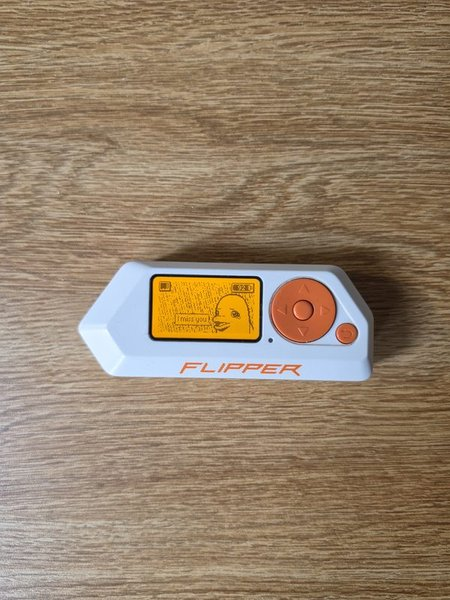
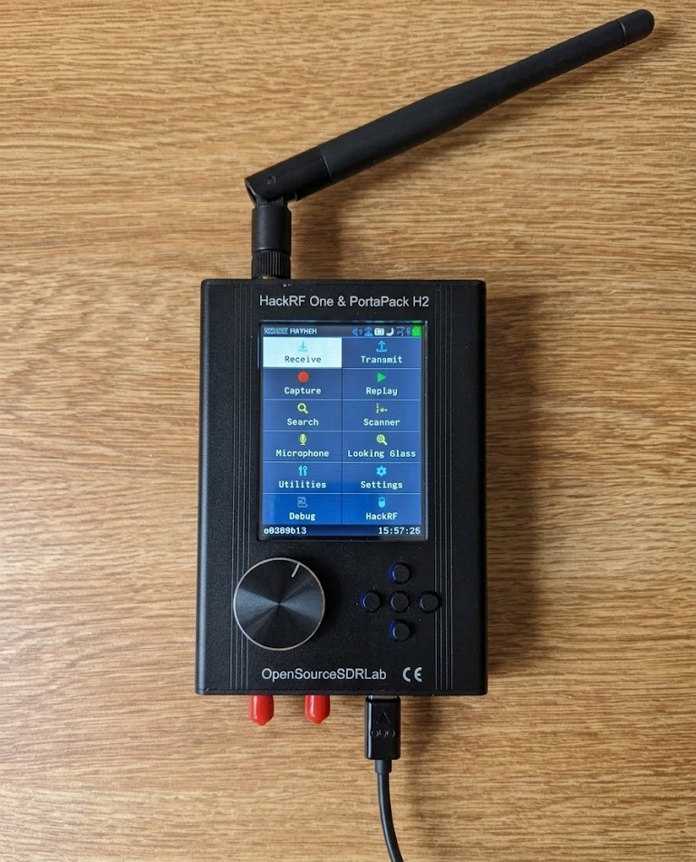
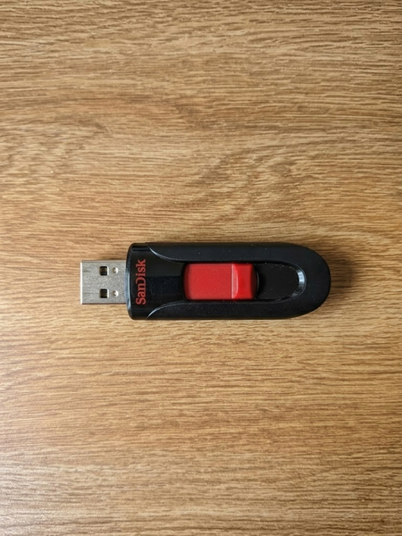
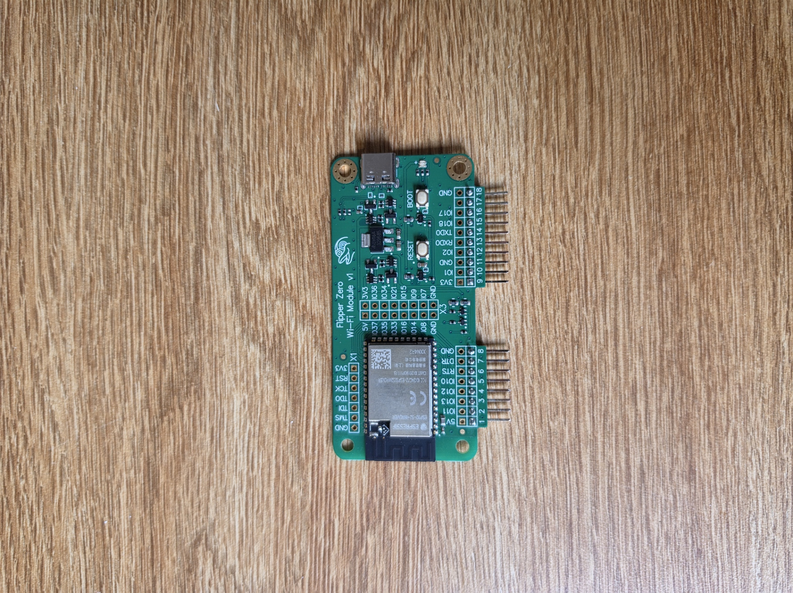
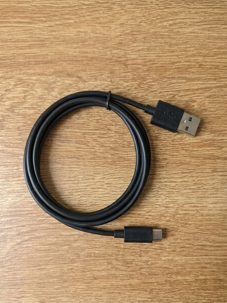
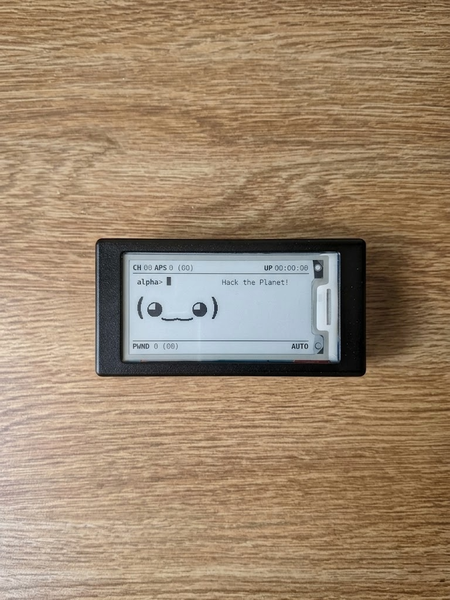
Group B: The Campus Attack Surface
Visual direction: student POV perspective in everyday motion spaces to show where trust and vulnerability overlap.
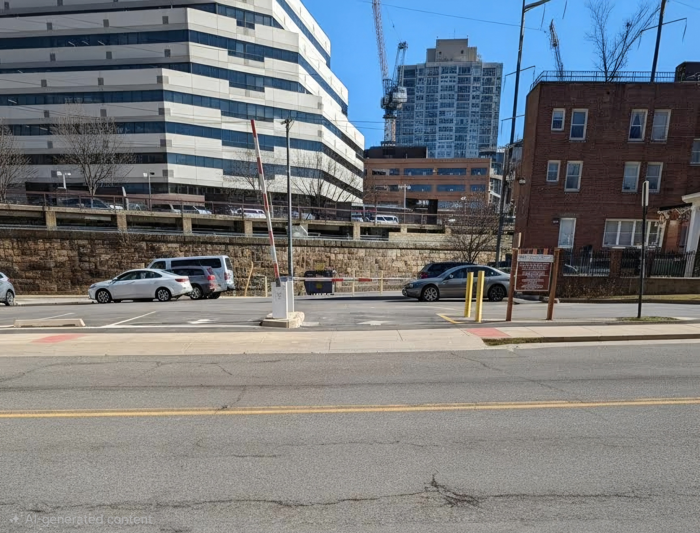
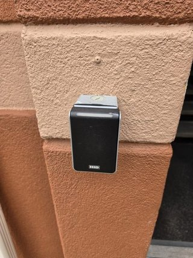
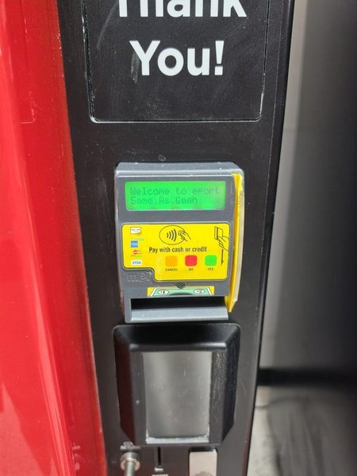
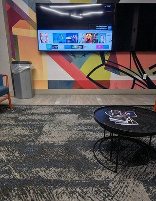
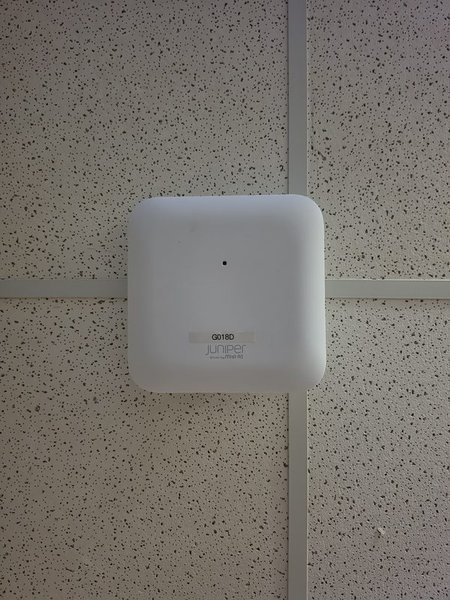
Attack Link Graph
Each row shows a likely attack path from Group A tool to Group B target, with risk scored from 1 (low) to 5 (high).